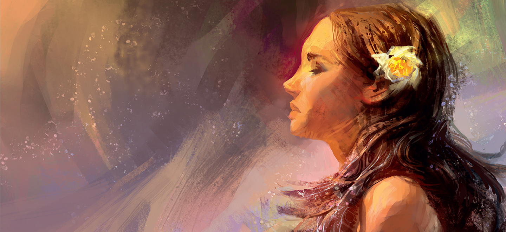

Origem do Universo
Uma criação marcada pela confusão e brutalidade, no qual divindades também geraram a vida e a beleza
O Caos, como tudo surgiu
Antes de tudo existir, o universo era o Caos: um grande vazio primordial, sem forma, ordem ou vida.Dele,
surgiram espontaneamente os primeiros deuses primordiais, conhecidos como protógenos.
O Caos deu origem a Gaia (a Terra), a base de tudo; Tártaro (o abismo profundo); e Eros (o amor e a
força da
atração). Em seguida, do próprio Caos emergiram também Érebo (a escuridão) e Nix (a noite). Juntas,
essas
divindades fundaram a estrutura básica da criação, dando início à complexa mitologia grega.
A Revolta e a Queda
A queda de Urano começou quando ele, temendo o poder dos próprios filhos (os Titãs, Ciclopes e
Hecatônquiros), os prendeu no interior de Gaia, a Terra. Cansada do sofrimento, Gaia incitou uma revolta
e
entregou uma foice de diamante ao seu filho caçula, Crono.
Em uma emboscada, Crono castrou o pai e assumiu o trono dos céus. Ferido e despojado de seu poder, Urano
profetizou que Crono também seria destronado por um de seus próprios filhos, selando o destino da
próxima
geração de deuses.
A Titanomaquia
A Titanomaquia foi a grande guerra de dez anos entre os deuses olímpicos, liderados por Zeu, e os Titãs,
comandados por Crono. Revoltado contra o pai, que engolia os próprios filhos para manter o poder, Zeus
libertou os seus irmãos e aliou-se aos Ciclopes e Hecatônquiros.
Com a vitória dos olímpicos, Crono e os Titãs foram derrotados e aprisionados no Tártaro, dando início à
era
de Zeus e ao domínio dos deuses no Monte Olimpo.